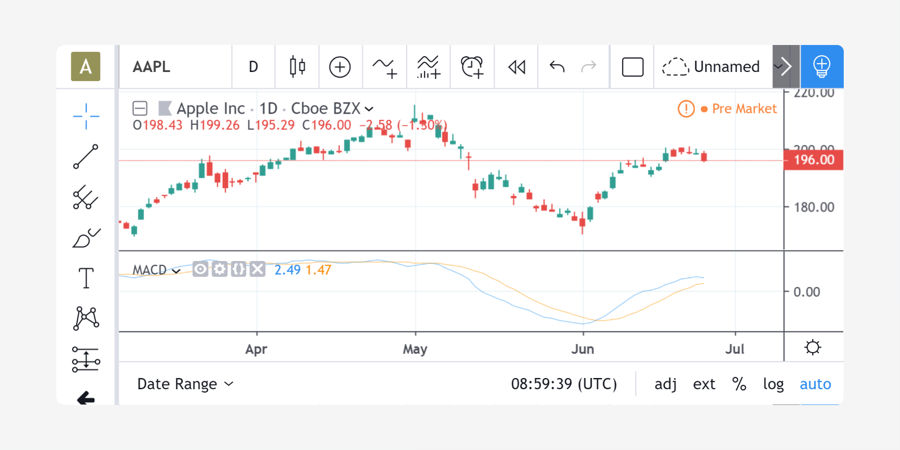

Introduction
TradingView has designed its own scripting language called Pine Script. It allows users to create custom indicators and run them on our servers - Official Guide.
Example
Let’s look at the implementation of the MACD indicator in Pine:
//@version=4
>>> study("MACD")
>>> fast = 12, slow = 26
>>> fastMA = ema(close, fast)
>>> slowMA = ema(close, slow)
>>> macd = fastMA - slowMA
>>> signal = sma(macd, 9)
>>> plot(macd, color=color.blue)
>>> plot(signal, color=color.orange)

- Line 1:
//@version=4 - Line 2:
study("MACD") - Line 3:
fast = 12, slow = 26 - Line 4:
fastMA = ema(close, fast) - Line 5:
slowMA = ema(close, slow) - Line 6:
macd = fastMA - slowMA - Line 7:
signal = sma(macd, 9) - Line 8:
plot(macd, color=color.blue) - Line 9:
plot(signal, color=color.orange)
This is a comment containing a compiler directive that tells the compiler the script will use version 4 of Pine.
Defines the name of the script that will appear on the chart as “MACD”.
Defines two integer variables: fast and slow.
Defines the variable fastMA, containing the result of the EMA calculation (Exponential Moving Average) with a length equal to fast (12), on the close series, i.e., the closing price of bars.
Defines the variable slowMA, containing the result of the EMA calculation with a length equal to slow (26), from close.
Defines the variable macd as the difference between the two EMAs.
Defines the variable signal as a smoothed value of macd using the SMA algorithm (Simple Moving Average) with a length of 9.
Calls the plot function to output the variable macd using a blue line.
Calls the plot function to output the variable signal using an orange line.
Example
Execution model of Pine scripts
A Pine script is not like many normal programs that execute once and then stop. In the Pine runtime environment, a script runs in the equivalent of an invisible loop where it is executed once on each historical bar. When execution reaches the last, real-time bar, the script executes once every time a price or volume change is detected, then one final time when the real-time bar closes and becomes a historical bar.
Series
The main data type used in Pine scripts is called a series. It is a continuous list of values that stretches back in time from the current bar and where one value exists for each bar. While this structure may remind many of an array, a Pine series is totally different and thinking in terms of arrays will be detrimental to understanding this key Pine concept. You can read about series here.
Understanding scripts
If you intend to write Pine scripts of any reasonable complexity, a good comprehension of both the Pine execution model and series is essential in understanding how Pine scripts work. If you have never worked with data organized in series before, you will need practice in putting them to work for you. When you familiarize yourself with Pine’s fundamental concepts, you will discover that by combining the use of series with our built-in functions designed to efficiently process series information, much can be accomplished in very few lines of Pine code.
Pine Editor
The Pine Editor is where you will be working on your scripts. To open it, click on the Pine Editor tab at the bottom of your TradingView chart. This will open up the editor’s window.
Where to go from here?
The fastest way to learn a programming language is to read about key concepts and try them out with real code. As we’ve just done, copy this documentation’s examples in the editor and play with them. Explore! You won’t break anything.
You will also find examples of Pine scripts in the editor’s New dropdown menu and in TradingView’s extensive Public Library of scripts which contains thousands of open source Pine scripts. Enjoy and welcome to Pine!